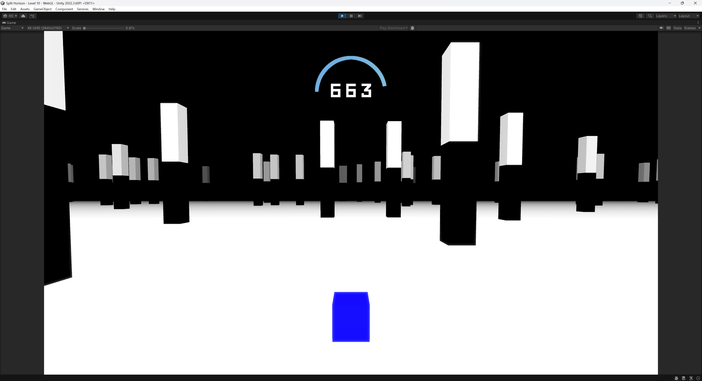

Split Horizon is a fast-paced, procedurally generated platform runner that builds on Brackeys’ Cubeathon with expanded mechanics, custom visual effects, and new gameplay systems.
The Cubeathon tutorial project functions as a basic endless runner where players guide a moving cube through static and dynamic obstacles while the cube moves forward automatically. The project demonstrates fundamental Unity skills through player movement and obstacle spawning and collision detection and scoring and camera following mechanics.
Split Horizon expands upon the original by including the follwing features:
Procedural level generation system
Optimized dynamic obstacle spawning
Gravity flipping player mechanic
Physics-based destruction on collision
Custom scene fade transition system
Dynamic score tracking and display
Pause menu with volume controls
Post-processing visual effects stack
Cheat codes
Gravity Flip Mechanic: The player-controlled gravity inversion was achieved through direct manipulation of Rigidbody physics and gravity vectors which dynamically adjusted collision behavior for floor and ceiling transitions.Dynamic Level Generation: Developed a custom DynamicLevelGenerator which instantiates five obstacle types and rare objects, using controlled randomization based on player position and ground bounds, to ensure a seamless progression while maintaining a balance of challenge (Developed with assistance of AI).Optimized Spawning: The generator only spawns objects slightly beyond the player’s visible range while a separate collection system (Despawner) removes objects behind the player to conserve memory and processing power.Physics-Based Destruction: A custom physics destruction system was created for both the player and obstacles which is triggered via collision detection and integrates explosion forces and debris breakup on death.UI and Score System: A custom UI was implemented for score display with dynamic updates during gameplay, as well as a pause menu featuring fully functional restart, quit, and volume slider controls for music and sound effects.

Scene and Gameplay Management: 15 increasingly difficult stages were designed using procedural complexity scaling and rare event probabilities to maintain a steady gameplay curve and stable frame rates with object pooling where necessary.